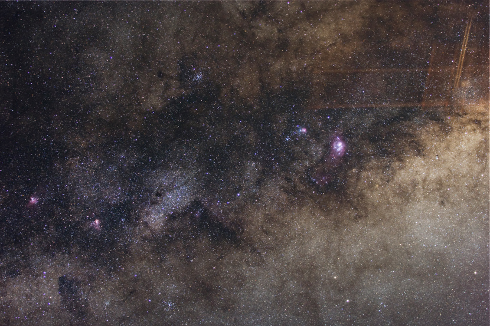

The Milky Way in Summer 夏季银河
这是银河的银心部分，在射手座中。星空中这里的星星最为密集，就像天街里的集市。照片中间偏左的是M8礁湖星云（右）和M21三叶星云（左）；照片右下角的是M16老鹰星云（左）和M17，Omega星云（右）。中间偏上的疏散星团则是M23。西部的夜空，非常干净。夜空的反差很高，使拍摄变得非常轻松。这张由两张照片叠加，效果就比得上在天荒坪上拍的5，6张的叠加了。
拍摄器材和参数：Canon 350D, EF L 70-200mm, GP2, Manual Guide. F 3.5, ISO 400, Total Exposure Time 24mins, 3 darkframes
作者：傅圣迪，祝尔康处理。摄于甘肃省马鬃山。2008年8月1日